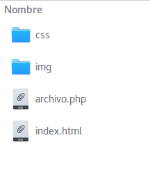

Objetivo General
Crear un sistema de Bases de Datos Relacionales Normalizado que permita que el usuario o administrador pueda tener acceso y realizar consultas, crear nuevos registros y eliminar información a través de un sistema Web.
Objetivos Particulares
-
Diseñar un sistema de base de datos relacional en la tercera forma normal.
-
Implementar el diseño de la base de datos en el gestor MySQL/MariaDB.
-
Crear un sistema web HTML que permita la consulta, inserción, modificación y búsqueda de información.
-
Utilizar CSS para el manejo de estilo del sistema web y Bootstrap para que el sitio sea responsivo.
-
Utilizar PHP para el manejo de la interacción del sistema web con la base de datos.
Requerimientos
-
Se deberá elegir una temática particular para la información que se maneja en el sistema.
-
Diseñar la base de datos relacional que contenga al menos 3 relaciones y 8 tablas en total.
-
Realizar la normalización a la tercera forma normal (3FN).
-
Para realizar la normalización deben definir con claridad sus relaciones, las entidades en cada una de ellas y las dependencias funcionales.
-
Mientras más dependencias funcionales encuentren, menor redundancia habrá en la base de datos.
-
El algoritmo de normalización entrega las tablas ya normalizadas de la relación en cuestión.
-
-
Realizar los diagramas de la base de datos relacional.
-
-
Implementar la base de datos en el gestor de base de datos MySQL creando las entidades, tablas y llaves correspondientes.
-
Llenar la base de datos con algunos datos de prueba, de manera que se puedan realizar búsquedas posteriormente.
-
-
Crear un sistema web con HTML5 + CSS3 + Bootstrap
-
Utilizar elementos de HTML5.
-
Hacer un estilo básico del sistema a través de CSS.
-
Utilizar Bootstrap para que el sitio sea responsivo (en particular en tablas, formularios e imágenes).
-
-
Utilizar PHP para la interacción del sistema web con la base de datos.
-
El sistema debe permitir inserción de registros, debe permitir seleccionar la entidad y tabla en la que se hará dicha inserción. La inserción se debe hacer a través de un formulario de HTML.
-
La consulta de información debe hacerse solicitando al usuario la entidad y tabla que desea mostrarse. Luego mostrar el contenido de la tabla seleccionada en una tabla de HTML.
-
La eliminación de la información se deberá hacer a través de un formulario de HTML, siendo necesario solamente el valor de la llave primaria de la tupla a borrar.
-
-
Para fines del proyecto usar el programa XAMPP o alguna otra alternativa.
-
Seguir la estructura de archivos siguientes en el servidor, creando las carpetas y el archivo html correspondiente:
-
css: contiene todos los archivos de estilo CSS
-
img: contiene todos los archivos de imágenes en el sitio (si utilizan alguna)
-
index.html o index.php: el archivo inicial del sistema. Este archivo se encuentra en el llamado "directorio raíz del sistema", en esta ubucación deberá colocar todos los archivos
htmly/ophpque escriba para su sistema.
-
Entrega
La entrega del proyecto consiste en un documento que contenga lo siguiente:
-
Introducción: Una breve descripción de lo que es y hace el sistema
-
Diseño: Los diagramas del diseño de la base de datos relacional. Esta es la parte central del proyecto, ya que es uno de los principales objetivos de la materia.
-
Normalización: El procedimiento de normalización de la base de datos a 3FN.
-
Conclusiones: Unas breves palabras acerca de lo que aprendieron al realizar el proyecto final y todo el curso en sí.
El código me lo entregarán por correo en un archivo comprimido.
La fecha de entrega será el 30 de Novimembre del presente.
-
El Jueves 9 de Noviembre será nuestra última clase.
-
Las clases del Jueves 16 y 23 de Novimembre serán sesiones opcionales de trabajo, avances y dudas sobre el desarrollo del proyecto final. Atenderé personalmente a cada de los que decidan asistir.
-
El Jueves 9 de Noviembre a partir de las 18:00 hrs. estaré recibiendo sus entregas de proyecto. En esta sesión me entregarán su documento de trabajo, y me demostrarán su proyecto.
Evaluación
| Rubro | Descripción | Valor |
|---|---|---|
| Normalización | Diagramas de las relaciones, entidades y dependencias funcionales | 20% |
| Diseño | Los diagramas del diseño: Grafo relacional y llaves ajenas. | 40% |
| Implementación | La parte operativa. La implementación del diseño de la base de datos en MySQL/MariaDB y el sistema Web (HTML + CSS + Bootstrap + PHP) que permite manejarlo. | 40% |